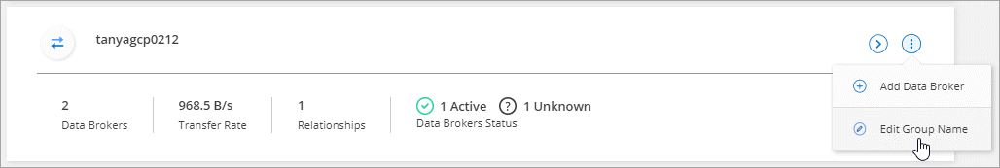
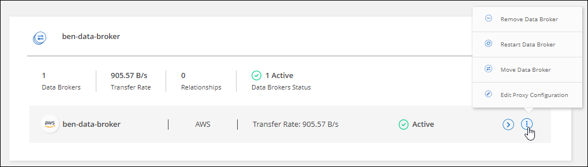

Request doc changes
Request doc changes Edit this page
Edit this page Learn how to contribute
Learn how to contributeManage data broker groups
Contributors
A data broker group syncs data from a source location to a target location. At least one data broker is required in a group for each sync relationship that you create. Manage data broker groups by adding a new data broker to a group, by viewing information about groups, and more.
How data broker groups work
A data broker group can include one or more data brokers. Grouping data brokers together can help improve the performance of sync relationships.
Groups can manage several relationships
A data broker group can manage one or more sync relationships at a time.
For example, let’s say you have three relationships:
-
Relationship 1 is managed by data broker group A
-
Relationship 2 is managed by data broker group B
-
Relationship 3 is managed by data broker group A
You want to accelerate the performance of relationship 1 so you add a new data broker to data broker group A. Because group A also manages sync relationship 3, the sync performance for relationship is automatically accelerated as well.
Number of data brokers in a group
In many cases, a single data broker can meet the performance requirements for a sync relationship. If it doesn’t, you can accelerate sync performance by adding additional data brokers to the group. But you should first check other factors that can impact sync performance. Learn more about how to determine when multiple data brokers are required.
Security recommendations
To ensure the security of your data broker machine, NetApp recommends the following:
-
SSH should not permit X11 Forwarding
-
SSH should not permit TCP connection forwarding
-
SSH should not permit tunnels
-
SSH should not accept client environment variables
These security recommendations can help prevent unauthorized connections to the data broker machine.
Add a new data broker to a group
There are several ways to create a new data broker:
-
When creating a new sync relationship
-
From the Manage Data Brokers page by clicking Add New Data Broker which creates the data broker in a new group
-
From the Manage Data Brokers page by creating a new data broker in an existing group
-
You can’t add data brokers to a group that manages an encrypted sync relationship.
-
If you want to create a data broker in an existing group, the data broker must be an on-prem data broker or the same type of data broker.
For example, if a group includes an AWS data broker, then you can create an AWS data broker or on-prem data broker in that group. You can’t create an Azure data broker or Google Cloud data broker because they aren’t the same data broker type.
-
Click Sync > Manage Data Brokers.
-
Click Add New Data Broker.
-
Follow the prompts to create the data broker.
For help, refer to the following pages:
-
Click Sync > Manage Data Brokers.
-
Click the action menu and select Add Data Broker.

-
Follow the prompts to create the data broker in the group.
For help, refer to the following pages:
Edit a group’s name
Change the name of a data broker group at any time.
-
Click Sync > Manage Data Brokers.
-
Click the action menu and select Edit Group Name.

-
Enter a new name and click Save.
Cloud Sync updates the name of the data broker group.
Set up a unified configuration
If a sync relationship encounters errors during the sync process, unifying the concurrency of the data broker group can help to decrease the number of sync errors. Be aware that changes to the group’s configuration can affect performance by slowing down the transfer.
We don’t recommend changing the configuration on your own. You should consult with NetApp to understand when to change the configuration and how to change it.
-
Click Manage Data Brokers.
-
Click the Settings icon for a data broker group.

-
Change the settings as needed and then click Unify Configuration.
Note the following:
-
You can pick and choose which settings to change—you don’t need to change all four at once.
-
After a new configuration is sent to a data broker, the data broker automatically restarts and uses the new configuration.
-
It can take up to a minute until this change takes place and is visible in the Cloud Sync interface.
-
If a data broker isn’t running, it’s configuration won’t change because Cloud Sync can’t communicate with it. The configuration will change after the data broker restarts.
-
After you set a unified configuration, any new data brokers will automatically use the new configuration.
-
Move data brokers between groups
Move a data broker from one group to another group if you need to accelerate the performance of the target data broker group.
For example, if a data broker is no longer managing a sync relationship, you can easily move it to another group that is managing sync relationships.
-
If a data broker group is managing a sync relationship and there’s only one data broker in the group, then you can’t move that data broker to another group.
-
You can’t move a data broker to or from a group that manages encrypted sync relationships.
-
You can’t move a data broker that is currently being deployed.
-
Click Sync > Manage Data Brokers.
-
Click
 to expand the list of data brokers in a group.
to expand the list of data brokers in a group. -
Click the action menu for a data broker and select Move Data Broker.

-
Create a new data broker group or select an existing data broker group.
-
Click Move.
Cloud Sync moves the data broker to a new or existing data broker group. If there are no other data brokers in the previous group, then Cloud Sync deletes it.
Update proxy configuration
Update the proxy configuration for a data broker by adding details about a new proxy configuration or by editing the existing proxy configuration.
-
Click Sync > Manage Data Brokers.
-
Click
to expand the list of data brokers in a group. -
Click the action menu for a data broker and select Edit Proxy Configuration.
-
Specify details about the proxy: host name, port number, user name, and password.
-
Click Update.
Cloud Sync updates the data broker to use the proxy configuration for internet access.
View a data broker’s configuration
You might want to view details about a data broker to identify things like its host name, IP address, available CPU and RAM, and more.
Cloud Sync provides the following details about a data broker:
-
Basic information: Instance ID, host name, etc.
-
Network: Region, network, subnet, private IP, etc.
-
Software: Linux distribution, data broker version, etc.
-
Hardware: CPU and RAM
-
Configuration: Details about the data broker’s two kinds of main processes—scanner and transferrer

The scanner scans the source and target and decides what should be copied. The transferrer does the actual copying. NetApp personnel might use these configuration details to suggest actions that can optimize performance.
-
Click Sync > Manage Data Brokers.
-
Click
to expand the list of data brokers in a group. -
Click
to view details about a data broker.
Address issues with a data broker
Cloud Sync displays a status for each data broker that can help you troubleshoot issues.
-
Identify any data brokers that have a status of "Unknown" or "Failed."

-
Hover over the
 icon to see the failure reason.
icon to see the failure reason. -
Correct the issue.
For example, you might need to simply restart the data broker if it’s offline, or you might need to remove data broker if the initial deployment failed.
Remove a data broker from a group
You might remove a data broker from a group if it’s no longer needed or if the initial deployment failed. This action only deletes the data broker from Cloud Sync’s records. You’ll need to manually delete the data broker and any additional cloud resources yourself.
-
Cloud Sync deletes a group when you remove the last data broker from the group.
-
You can’t remove the last data broker from a group if there is a relationship using that group.
-
Click Sync > Manage Data Brokers.
-
Click
to expand the list of data brokers in a group. -
Click the action menu for a data broker and select Remove Data Broker.

-
Click Remove Data Broker.
Cloud Sync removes the data broker from the group.
Delete a data broker group
If a data broker group no longer manages any sync relationships, you can delete the group, which removes all of the data brokers from Cloud Sync.
Data brokers that Cloud Sync removes are only deleted from Cloud Sync’s records. You’ll need to manually delete the data broker instance from your cloud provider and any additional cloud resources.
-
Click Sync > Manage Data Brokers.
-
Click the action menu and select Delete Group.
-
To confirm, enter the name of the group and click Delete Group.
Cloud Sync removes the data brokers and deletes the group.